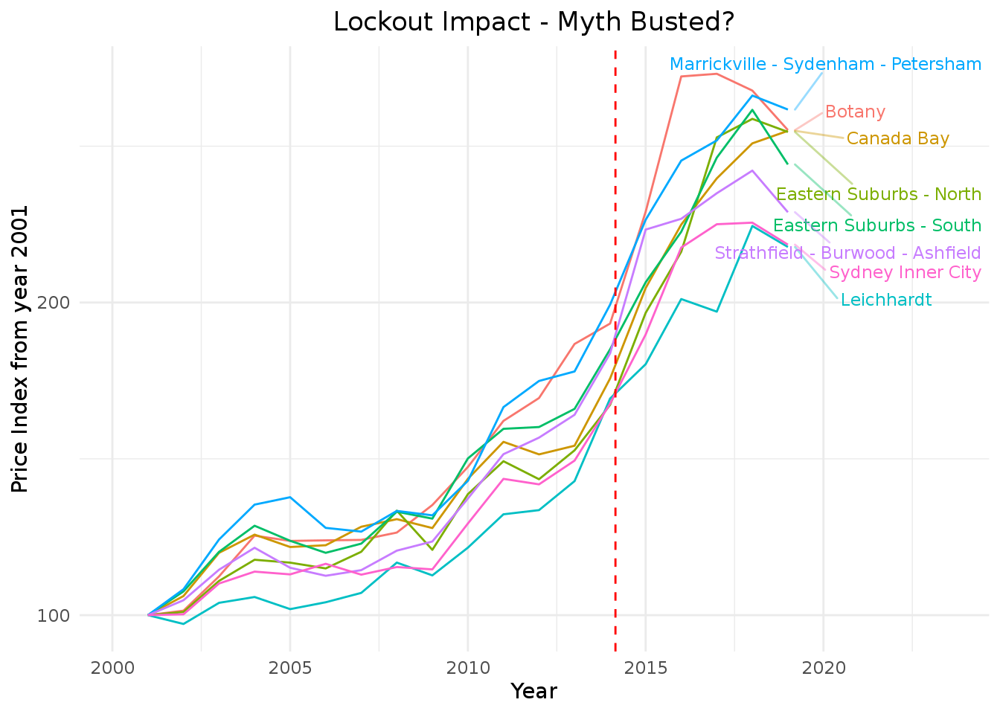
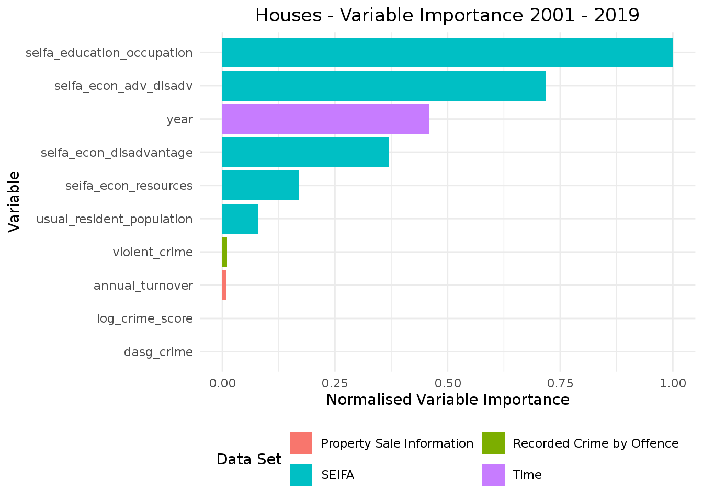
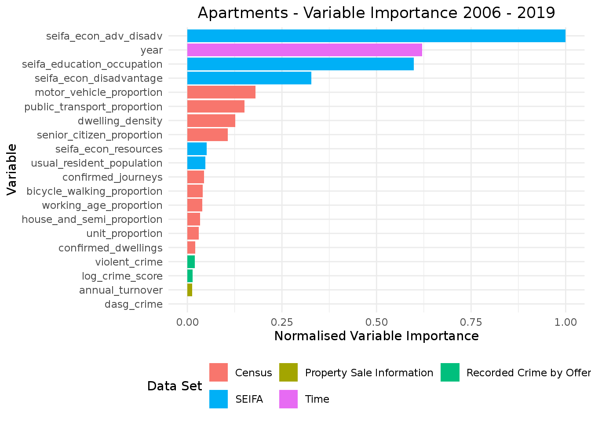

NSW Property - A Case Study
Houses - A Story of Growth
The overwhelming sentiment in Australia is that investing in houses is as safe as putting money in the bank, except the value of the house will double every 7 years. These two features, security and growth, are typically considered to be competing forces and are what the Risk/Return trade-off characterises.
This case study looks at NSW property over the last 20 years and finds that for the most part, this trade-off hasn’t applied. Over the last year there has been discussion of a burst Sydney property bubble, but that seems to have been overwhelmingly answered over the past several months of growth. This case study will not extend to that bounceback as it considers only the period from 2000 until the end of June 2019.
1 - A Story of Growth
If you were looking at buying a house in NSW in the year 2000, you basically couldn’t go wrong. Prices weren’t yet outrageous as there hadn’t been all that much growth over the proceeding 10 years. Across NSW, the median house price was $162,750. In Sydney, this was a bit higher at $264,500.
The median return over the next 20 years was 295% (that’s equivalent to nearly tripling your original investment and equates to an annual return of 7.5% per annum), with the absolute worst return being 15% at Lightning Ridge. On the other hand, the average person who bought a house in Bangalow, saw a growth rate of 1,171% (equivalent to 14.3% per annum).
The below graph shows how much of the state grew solidly between 2001 and 2004, plateaued between 2005 and 2009 and then resumed growth from 2009, significantly so after 2012. Interestingly, these movements coincide strongly with RBA Cash Rate reductions (between February 2001 and December 2001 the Cash Rate fell 2%, between September 2008 and April 2009 the Cash Rate fell 4.25% and there has been a slow reduction down to 0.75% since November 2011). This is highlighted in the below graph where reductions in the Cash Rate (i.e. Expansionary Policy) are shown in green and increases (i.e. Contractionary Policy) in red.

2 - Regional NSW Grew First
The prevailing wisdom regarding property prices seems to be that property prices tend to rise fastest in the Australian capital cities, particularly Sydney and Melbourne. While the data sees this over the last 7 years, the story isn’t as strong in the first property boom of this millenium.
The below graph shows the above data, but splits the state into Greater Sydney and the rest of NSW. What is clear is that initially regional areas grow faster and it is only in later year that Sydney catches up and in some areas surpases the regional growth.
3 - Which Regions Grew the Most?
The table below shows the average cumulative growth in house prices for all 28 statistical level 4 (SA4) regions of NSW. While the Eastern Suburbs of Sydney are way out ahead of the pack, the average index score for all SA4s has at least doubled from 100 at the start of the year 2000 to over 200 all over the state.
| SA4 | Greater Sydney or Rest of NSW | Average Price Index in 2019 |
|---|---|---|
| Sydney - Eastern Suburbs | Greater Sydney | 571.8192 |
| Southern Highlands and Shoalhaven | Rest of NSW | 506.4057 |
| Richmond - Tweed | Rest of NSW | 480.2245 |
| Capital Region | Rest of NSW | 477.8516 |
| Coffs Harbour - Grafton | Rest of NSW | 474.7772 |
| Sydney - Inner West | Greater Sydney | 462.8109 |
| Hunter Valley exc Newcastle | Rest of NSW | 446.4270 |
| Newcastle and Lake Macquarie | Rest of NSW | 446.3023 |
| Sydney - North Sydney and Hornsby | Greater Sydney | 445.6267 |
| Sydney - City and Inner South | Greater Sydney | 440.5566 |
| Illawarra | Rest of NSW | 433.3130 |
| Sydney - Ryde | Greater Sydney | 416.5654 |
| Sydney - Outer South West | Greater Sydney | 416.2078 |
| Sydney - Northern Beaches | Greater Sydney | 414.1424 |
| Mid North Coast | Rest of NSW | 411.7700 |
| Sydney - Blacktown | Greater Sydney | 410.4843 |
| Sydney - Parramatta | Greater Sydney | 403.9452 |
| Sydney - South West | Greater Sydney | 400.9640 |
| Sydney - Baulkham Hills and Hawkesbury | Greater Sydney | 388.6254 |
| Central Coast | Greater Sydney | 382.4147 |
| Sydney - Outer West and Blue Mountains | Greater Sydney | 380.1468 |
| Sydney - Inner South West | Greater Sydney | 379.6007 |
| Central West | Rest of NSW | 357.4640 |
| New England and North West | Rest of NSW | 331.1643 |
| Sydney - Sutherland | Greater Sydney | 325.7235 |
| Riverina | Rest of NSW | 322.9197 |
| Murray | Rest of NSW | 307.3306 |
| Far West and Orana | Rest of NSW | 263.0840 |
Visualising these figures on the map of NSW shows an obvious bias towards coastal regions, but also a slight lull for the coastal regions which are closer to Greater Sydney. This might suggest a preference to either be in the thick of it on Bondi Beach or get away from everything, except the beach.
4 - Top 10 Regional Suburbs
The next focus is to look more closely at the top 20 suburbs in 2019, which conveniently split into two groups of 10 based on being in Greater Sydney or Regional NSW.
It’s probably not obvious exactly where these suburbs are, so I’ve shown them on the map. We can now see a cluster of high performing suburbs in Newcastle, as well as a cluster around Byron Bay and near Canberra (as I only have access to NSW data the ACT is not visible, but based on this evidence Canberra might have seen some solid growth over the last 20 years).
5 - Top 10 Greater Sydney Suburbs
Turning attention to Sydney, St Leonards has had some very perculiar growth (at least in 2017 and 2018), while Queenscliff north of Manly has consistently been a top performer.
Unsurprisingly, a number of suburbs in the Eastern Suburbs of Sydney feature in the top 10 best performing since 2000, but it is pretty hard to see anything here as the highly performing suburbs are all clustered very close to the centre of Sydney.
Zooming in shows a couple of interesting stories. Being close to Sydney on the Northwest line seems to matter, while places like Darling Point and Double Bay may have benefitted from the lock-out laws in introduced in 2014. Perhaps strangely, only two beach suburbs, Queenscliff and Coogee, feature in the top 10.
Apartments - Growing in the West
One big caveat to begin the story of apartments is that my data was fairly sparse before 2001. I put this down to the NSW Valuer General’s focus expanding slightly from being primarily concerned with property sales on plots of land to being concerned with all property sales. For this reason I’ve indexed prices to 2001 median values rather than those in the year 2000.
6 - A Story of Growth
The median apartment price across the state in 2001 was $268,450, which was actually higher than the median house price in 2001, at $187,312. But this just reflects the geographical distribution of apartments in NSW, being primarily in Sydney. Interestingly, it was only a bit below the median house in Sydney in 2001 at $294,312.
The median return over the next 19 years was 147%, with the absolute worst return being a reduction in the index value to only 40 in Albury. On the other hand, the average person who bought an apartment in Figtree, in Wollongong, saw a growth rate of 472%.
The below graph, puts the growth in apartment prices on the same scale as that for houses and overlays the RBA Cash Rate movements. As you can see, there is a less obvious trend, although it is still upward.
7 - Top 10 Suburbs
While there are apartments throughout the state, I’ve chosen to focus on Greater Sydney as this is where 291 of the 412 suburbs are with sufficient apartment sales every year to calculate the median price.
The below maps expands on a really interesting finding, apartment price growth is clustered to the south and west of the city. A complete contrast to the above house price growth. In fact, the only statistical area 4 which has any overlap in top 10 performers is the Central Coast.
8 - Getting Rich off the Lock-Out?
Earlier I touched on the lock-out laws potentially having an impact on house prices to the east of the city. In fact, any change is more likely to be seen in the value of apartments as they make up more than 80% of the properties in the affected areas.
The below graph shows the 9 suburbs where lockout laws are in place and illustrates the February 2014 introduction as a dashed red line. Based on this graph, it very much appears as though the lockout laws had a positive impact on apartment prices.
The below graph dispels that thought however, as it shows nothing special at all happening in the Sydney Inner City Statistical Area 3 (SA3) where all of these suburbs reside, relative to other central Sydney suburbs. Interestingly, this is the first time the 2018-19 reduction in prices looks obvious.

Understanding Variable Importance
As shown on the introduction page, there are a number of data sets which have been combined with the core property sale data to try to understand suburb characteristics. Importantly, these data sets run on time scales which may not align with the property sales data (covering 1990 to 2019, although units were only properly captured from 2001).
The following table summarises each data set’s timeframe and provides an explanation for how they were transformed.
| Data Set | Timeframe | Explanation |
|---|---|---|
| Property Sale Information | 1990 - 2019 | Yearly values were calculated using the average of a rolling 12-month window (calculated quarterly from the previous 12 months of data). |
| Property Land Information | 2012 - 2018 | Values updated annually by NSW Valuer General - Extrapolated from 2018 to 2019. |
| Recorded Crime by Offence | 1995 - 2018 | Yearly values were aggregated from monthly totals - Extrapolated from 2018 to 2019. |
| SEIFA | 2001, 2006, 2011, 2016 | Interpolated values between 2001 and 2016 and then extrapolated from 2016 - 2019. |
| Census | 2006, 2011, 2016 | Interpolated values between 2006 and 2016 and then extrapolated from 2016 - 2019. |
| NSW Government & Non-Government Schools | 2016 | Government & Non-Government schools were combined with Government schools to build a proxy of education, but this comes from a single year reference point. The calculated value was allocated to all years. |
| Mesh Blocks | 2016 | Meshblocks are relevant for the Green Space calculation, but provide only a single year. This value was allocated to all years. |
| Metro ARIA | 2014 | Only a single year is available and so this value was allocated to all years going forward. |
While some variables I’ve included would suggest powerful predictive capabilities, such as the ARIA scores for access to services or my proxy for Green Space, in a modelling context they are not going to be useful as they have a single value which does not change over time, and was obtained much later than some of the data.
On the other hand, the SEIFA indexes coming out of the ABS and the other Census measures probably can be used to try to understand the impact they have on house or unit prices. Given they are calculated at 5 year windows (within a changing suburb environment) they are far from perfect, but given the fairly logical transformations I have completed, they have some modeling usefulness.
One further transformation I have completed is to try and control for the general growth in values over time. Leaving this in basically shows years as the most relevant variable by far and this is simply because of the very strong growth trend seen over the past 20 years. By first taking the suburb median and then dividing by the NSW median, I am able to control for the general upward movement in the state to a certain degree.
9 - Variable Importance 2001 - 2019
The following graph shows the variable importance scores coming from a random forest generated to model the NSW growth adjusted index from 2001 - 2019, using only the variables available for that period.

The above chart, showing variable importance when the dependent variable is house prices, illustrates that the SEIFA indexes carry a fair bit of information. The model built using these variables explains about 82.6% of the variance in the dependent variable.
The below chart, covering apartment prices assigns less importance to the SEIFA indexes, but they are still much more relevant than crime values and the gross amount of turnover in property. This model is explaining about 82.6% of the variance in the data.

10 - Variable Importance 2006 - 2019
While a random forest can calculate variable importance over variables with missing values, it is actually interpolating a value in some fashion (often the mean) and so doesn’t make a whole lot of sense. It therefore makes a bit more sense to shorten the window when looking to include Census data which I have since 2006.
The below graphs shows the normalised variable importance from two more random forests, one each for houses and apartments.
Once again the SEIFA indexes for education/employment resources and advantage/disadvanage feature highly. Interestingly however, the proportion of journeys to work by public transport is now above the time variable and several other census scores relating to transport and the make properties have relevant importance.

11 - How Variables Explain Prices
While a random forest does a useful job of identifying influential variables, it doesn’t give a clear indication of how the dependent variable (price index controlled for NSW price growth) is influenced by the independent variables (everything else, but in this case only the variables with some importance from the previous section).
For this job it can be best to use a simple linear model, but first it is important to consider correlated variables as including variables which are not independent will generate some strange results. There are a couple of strong candidates for correlation within the existing list of variable importance. Some of these aris from being a nearly complete measure (i.e. public transport vs motor vehicle & house proportion vs unit proportion), while others might be measuring similar variables (such as the case with the 4 SEIFA indexes)
The correlation plot indicates that there are in fact independence concerns with several of the variables. The clashes seem to be:
- Usual Resident Population vs Confirmed Journeys vs Confirmed Dwellings
- Proportion of People Working Age vs Proportion of Senior Citizens
- Proportion of Journeys by Public Transport vs Proportion of Journeys by Motor Vehicle
- Proportion of Houses vs Proportion of Units
- SEIFA Index of Disadvantage vs SEIFA Index of Advantage & Disadvantage.
In each case I will take the variable with the higher importance based on the random forest variable importance. This means, confirmed journeys and dwellings, the proportion of people working age, proportion of journeys by motor vehicle, proportion of houses and SEIFA Index of Disadvantage will all be removed, but I must stress this is sort of arbitrary and I could just have easily removed the other side.
The below table shows the coefficients and p-values from linear models calculated on the NSW controlled 2006 - 2019 price indexes for houses and apartments. I’ve scaled the data to a mean of 0 and standard deviation 1 as it helps to interpret the impact of each variable.
The correct way to consider coefficients is that all else being equal, a unit movement in the variable has the coefficient amount of impact on the dependent variable. Since I have scaled the data this isn’t so obvious but what I am looking at instead are that variables with positive coefficients contribute to prices and variables with negative coefficients detract from prices, with the scale roughly determining how much they would move.
| Variable | House Estimate | House P-Value | Apartment Estimate | Apartment P-Value |
|---|---|---|---|---|
| (Intercept) | -0.001 | 0.8303 | -0.0033 | 0.6229 |
| year | 0.2412 | 0.0000 | 0.2965 | 0.0000 |
| usual_resident_population | -0.0371 | 0.0000 | 0.3907 | 0.0000 |
| senior_citizen_proportion | 0.1405 | 0.0000 | 0.0911 | 0.0000 |
| public_transport_proportion | 0.2556 | 0.0000 | -0.6055 | 0.0080 |
| bicycle_walking_proportion | -0.073 | 0.0000 | -0.2409 | 0.0522 |
| unit_proportion | 0.2586 | 0.0000 | 0.3872 | 0.0003 |
| dwelling_density | 0.0613 | 0.0000 | 0.0545 | 0.0000 |
| seifa_econ_adv_disadv | 0.3974 | 0.0000 | 0.6012 | 0.0000 |
| seifa_econ_resources | 0.0504 | 0.0003 | 0.468 | 0.0000 |
| seifa_education_occupation | 0.0569 | 0.0000 | 0.4153 | 0.0000 |
What this table shows is that several variables have a positive impact on property prices as they increase in value, these are:
- Year
- The proportion of senior citizens
- The proportion of units
- Dwelling density
- SEIFA Index of Relative Socio-Economic Advantage and Disadvantage
- SEIFA Index of Education and Occupation
- SEIFA Index of Economic Resources
The first is fairly obvious. Over the last 20 years there has been a lot of growth so the year is positively correlated with price increases. The proportion of senior citizens has a moderate impact, perhaps they are using their superannuation to buy nicer houses. The proportion of units and dwelling density suggests that as suburbs become more dense their prices increase, but this may be a function of other things occuring, such as new train stations significantly improving a corridor but also demanding higher density living in the area. Finally the three remaining SEIFA indexes all suggest positive increases in prices.
Of the remaining variables, population increases appear to be positive for apartments but slightly negative for houses, the proportion of public transport is curious as it is strongly positive for houses but even more strongly negative for apartments. There might be something worth looking into in that, perhaps it is a case of variable interdependence with population or density measures. Finally bicycles or walking is fairly negligible in both cases and probably shouldn’t make the important variable cut.